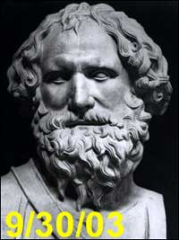

Nos enteramos de que se convocó a los druidas para reducir accidentes en las partes más estrechas de las autopistas de Austria. Se han erigido enormes monolitos de cuarzo blanco a los lados de las rutas para “restaurar el flujo natural” de la “energía de la Tierra”. En una prueba secreta de dos años, los enormes pilares de los druidas se ubicaron a los lados de un notable angostamiento de las rutas, y he aquí que los accidentes fatales descendieron de un promedio de seis al año a cero. Un señor llamado Gerald Knobloch, quien se describe con modestia como un Archidruida, usó una varilla de adivinación para inspeccionar un angostamiento de 300 metros en la autopista para restaurar las “líneas de energía de la Tierra”. Afirma que localizó elementos peligrosos que habían interrumpido ese flujo. ¡Bien hecho, Gerald!
Para citar al propio Archidruida heroico: “El peor [de los elementos peligrosos] era un río al que la interferencia humana había forzado a fluir contra su dirección natural. Erigiendo dos piedras de cuarzo, cada una con un peso de más de una tonelada, a cada lado del camino, se restauraron las líneas de energía. Las agujas de acupuntura también restauran las líneas de energía interrumpidas. Lo que la acupuntura hace por el cuerpo, las piedras lo hacen por el ambiente”. Un vocero de la autoridad de caminos dijo que las autoridades recurrieron al Sr. Knoblock como último recurso. Dijo:
Tuvimos que poner carteles para reducir la velocidad, renovar la superficie vial y hacer más seguras las curvas pero aún seguíamos teniendo accidentes. En ese punto no se nos ocurría nada más para hacer y decidimos que podríamos probar cualquier cosa. Admito que cuando primero lo examinamos [el asunto de las líneas de energía] estábamos en duda. No queríamos que la gente se riera de nosotros, así que mantuvimos la prueba en secreto y la hicimos en pequeña escala. Pero fue un resultado sorprendente en verdad. Por supuesto, la disminución de accidentes podría deberse a algo más, dado que estamos reparando los caminos continuamente.
Un momento. Pasaron por alto las cartas de Tarot, el rociado de sal, el exorcismo, el sacrificio de corderos, el agua bendita, obtener el horóscopo de la autopista, correr en círculos desnudo a medianoche, toda clase de remedios igualmente sensatos. ¡Esta gente no tiene ningún sentido común!
Los científicos son escépticos pero las autoridades viales están extendiendo la participación de los druidas a lo largo del país, pagándoles unos $6000 por cada investigación; una fracción de lo que cuesta repavimentar una ruta. Me suena lógico. Sólo espero que ningún conductor sufra accidentes cuando vean monstruosas torres de cuarzo acechando delante de ellos. Ah, pero soy tan destructor de ilusiones…
Uno de nuestros lectores, el doctor Kenneth F. Reeve, del Departamento de Psicología del Caldwell College, en Nueva Jersey, nos presenta este relato:
Soy un profesor de psicología que dicta con frecuencia clases de psicología experimental. Como esta clase trata de aprender cómo determinar la validez de las afirmaciones, me gusta darles a mis estudiantes algo interesante con lo que probar sus capacidades para el pensamiento crítico. Si un estudiante descubre una afirmación extraordinaria sobre fenómenos paranormales en la internet y luego elabora un estudio seguro para verificar la afirmación, recibe créditos adicionales. (Los estudiantes obtienen una muy buena idea de cómo hacer esto presenciando su especial [del canal Nova], Secretos de los Psíquicos.)
A tal fin, pensé que debería relatar la siguiente historia de éxito: Una de mis estudiantes me remitió el siguiente mensaje electrónico que había recibido de un amigo que juguetea con el misticismo:
Acabo de descubrir algo llamado filosofía cabalística en un gran sitio web, Kabalarians.com. No entiendo mucho de ello ¡pero describen tu personalidad basándose sólo en tu nombre! Aunque sé que normalmente eres escéptica a este tipo de cosas, ¡las descripciones eran exactas en extremo! Busqué mi propio nombre y el de algunos amigos, ¡y las descripciones me sorprendieron! ¡Revísalo!
Luego de verificar el sitio, la estudiante acertó proponiendo que la gente percibe tales descripciones de personalidad como “exactas en extremo” como resultado de sus prejuicios subjetivos y su deseo de creer, cuando se combinan con la información vaga que se ve con frecuencia en tales descripciones.
La capacidad de esta estudiante para aplicar sus habilidades escépticas me hizo aún más feliz cuando elaboró un estudio para verificar la exactitud de la afirmación de los cabalísticos. La estudiante eligió 30 personas al azar. Luego de pedir sus nombres, se obtuvieron las descripciones de “personalidad” de estos individuos del sitio cabalístico. A 15 de estas personas, elegidas al azar, se les dio su descripción de personalidad “verdadera” y se les pidió que calificaran su exactitud en una escala del uno al diez. A las otras 15 personas se les dieron descripciones de personalidad que NO estaban conectadas con sus nombres, y se les pidió que hicieran la misma calificación. A las personas de ambos grupos se les dijo que las descripciones que se les había dado CORRESPONDÍAN a sus nombres. Mi estudiante planteó correctamente la hipótesis de que no habría diferencia significativa en las mediciones de exactitud entre los dos grupos. Se sorprendió, sin embargo, de que también resultó verificada mi hipótesis: que las mediciones de exactitud serían muy altas independientemente de la condición.
Unos cuantos estudiantes han hecho estudios competentes investigando fenómenos paranormales, todos sin resultado positivo alguno para las afirmaciones realizadas. A lo largo de sus investigaciones, los estudiantes se están volviendo “brights” a pesar de ellos mismos. Muchos de los estudiantes, sin embargo, aún esperan obtener resultados positivos en las áreas paranormales. Puede suponer por qué: ¡les mostré el ofrecimiento del premio de la JREF!
Gracias, profesor Reeve. Sí, si promovemos proyectos similares entre los estudiantes, y los hacemos elaborar activamente procedimientos experimentales, habremos logrado mucho. En cuanto al experimento realizado por su estudiante, sugiero que podría expandírselo para obtener comentarios escritos de los participantes, luego de su participación, haciéndolos obtener antes sus opiniones y actitudes hacia tales afirmaciones. ¡La variedad de opiniones que seguramente resultarán de tal encuesta sería interesante!
El lector Marc Berard, de Rhode Island, nos dice:
Hoy estaba leyendo un artículo que se burlaba un poco de la Semana Psíquica Nacional (http://abcnews.go.com/sections/us/WolfFiles/wolffiles.html). Cerca del final del artículo se menciona algo llamado el Campamento Intuitivo Bosque Encantado, una especie de campamento de verano en Carolina del Norte donde se les enseña a los niños tales cosas como desarrollar su potencial en la PES, rabdomancia, auras, clarividencia y comunicación con los espíritus. Su sitio es Psychic Kid’s Spiritual Experiences (http://www.psykids.net/index.html).
Es interesante que en un enlace de su sitio que apunta a la Sociedad Estadounidense de Zahoríes dicen: “Hemos descubierto que los zahoríes son personas de lo más maravilloso, abiertas, dinámicas, y deseosas de poner las cosas a prueba, de modo que se puede establecer y mantener un mínimo de validez”. (El énfasis es mío.) Uno se maravilla de las fuentes que usan para su “investigación científica”. Vea este ejemplo: “Los científicos empíricos han encontrado receptores biológicos de más de 20 sentidos más allá de los 5 tangibles, y los investigadores de la conciencia han identificado otros 20 ó más sentidos intangibles. Esos 49 sentidos son inherentes a cada uno de ustedes; ¡sólo esperan ser activados!”. ¿¡¿¡49 sentidos!?!? ¡Caramba!, ¿qué probabilidad hay de que la mayor parte de los humanos sean ciegos naturalmente a 44 de ellos?
También dan consejos para padres. Cómo criar a un hijo intuitivamente, cómo manejar la creciente habilidad psíquica de un niño, estudios metafísicos en el hogar, y algo llamado educación holística. Recomiendan tales recursos como el libro “Aprendiendo a comunicarse con los animales, la naturaleza, las hadas y los ángeles”, ¡y esto está listado en su sección de lectura de no ficción! Me pregunto si criar a un niño en un entorno tan desconectado de la realidad podría considerarse una forma de abuso.
Tenía que contárselo a alguien. Quiero decir… esto es demasiado.
Marc, la Sociedad Estadounidense de Zahoríes está cerrada a la investigación. Aquellos que han preguntado en años anteriores informan que sus preguntas se enfrentan con un silencio pétreo. Un antiguo miembro desencantado me dijo que cuando salió el tema del premio de la JREF en su reunión anual, se les dijo directamente a los miembros que evitaran involucrarse conmigo o con la JREF. ¿Por qué, si la ASD [1] desea “poner las cosas a prueba”, la organización quiere que un desafío de buena fe simplemente desaparezca? ¿La ASD no puede usar tan bonita suma de dinero?
Con mi rudeza habitual digo: supongo que saben muy bien que la rabdomancia falla en cualquier verificación bien hecha, y desean seguir alimentando su ilusión favorita.
Para asegurarme de que eran reticentes a que se los pusiera a prueba, envié el siguiente e-mail a ASD@dowsers.org, el miércoles 20 de agosto de 2003:
¡Hola!
Mis lectores me preguntan repetidamente por qué no les ofrezco a la ASD el premio de la Fundación Educativa James Randi. Ya que estoy seguro que la ASD conoce bien este ofrecimiento, y de hecho muchos miembros de la ASD ya se han presentado, resulta extraño que la Sociedad no tenga interés en la oferta.
¿Alguien de la ASD puede darme una razón para esta extraña reticencia a ganar un millón de dólares? Les pregunto así puedo informar a mis lectores.
James Randi James Randi Educational Foundation www.randi.org randi@randi.org
Los mantendré informados…
Me aflige de continuo saber que padres ignorantes arrastran a los niños a esos cultos, y veo casi a diario el dolor que se deriva de ello. Los niños ya tienen bastantes problemas diferenciando entre realidad y fantasía; tener padres con el mismo problema no ayudará a ninguno de ellos.
[Aquí Randi cuenta un mensaje típico de uno de los solicitantes para el premio de la JREF. El texto recibido está escrito en un inglés fracturado, posiblemente escrito con la ayuda de algún programa de traducción automático que lo convirtió al inglés a partir del ruso. El comentario de Randi al respecto hace hincapié en lo difícil que es saber cuantas solicitudes realmente se reciben para comprobar facultades paranormales. Es tan difícil leer en inglés el mensaje recibido que es un verdadero problema traducirlo.] [N. del T.]
![[Doris Reynolds]](082203-Reynolds.jpg)
Doris Reynolds, columnista sobre comidas para el periódico Naples Daily News de Florida, demandó a Angela Passidomo Trafford, otra escritora del periódico que ofrece “consejo espiritual”, por más de un millón de dólares. Reynolds dice que fue manipulada para hacerle a Trafford un cheque por $95.000 en concepto de “regalo”. La demanda acusa a Trafford de fraude constructivo, enriquecimiento ilícito y robo civil. Reynolds dice que acudió a Trafford para obtener “tratamiento espiritual para la autosanación” desde 1999 hasta mayo de 2003, había usado con anterioridad los servicios de Trafford como consejera espiritual en 1996, y le ha pagado desde entonces entre dos y tres millones de dólares por los “tratamientos”.
![[Angela Trafford]](082203-Trafford.jpg)
Reynolds dice que se hallaba “bajo coerción extrema”, ya que Trafford le dijo que no volvería a tratarla hasta que le diera ese dinero. Dice que Trafford concluyó su tratamiento el 13 de mayo “sin explicación o razón”, aunque parecería que la razón era que no se le estaba pagando. Ahora parece que Reynolds se está poniendo más astuta, ya que dice que su compañera de trabajo “le afirmó de manera intencionalmente engañosa que era una mensajera de Dios” y que Reynolds tenía que pagarle.
El juicio de Reynolds es por daños por un total de más de un millón de dólares, pero el jueves Reynolds dijo que la cantidad que le entregó a la mensajera de Dios podría estar más cerca de los tres millones. Trafford cobraba inicialmente $190 la hora, pero la tarifa se incrementó con el tiempo a $380, dijo. ¿Quién cree que es, esta Trafford? ¿Una abogada?
Reynolds dijo que le pagó a Trafford $500.000 el año pasado por sesiones de sanación espiritual que consistían en que las dos mujeres conversaban y meditaban y Reynolds terminaba unos dibujos. Sus sesiones duraban por lo general entre cuatro y cinco horas, a veces siete días a la semana. Al momento de recibir los tratamientos, Reynolds sufría de depresión, ansiedad y estrés, dijo. Y, me imagino, de credulidad. De verdad espero que sepa de comida más de lo que sabe sobre la perfidia humana.
El lector “Rupert” comparte con nosotros esta definición: “Cronomancia es el arte de adivinar el futuro esperando a ver qué pasa”.
En el Reino Unido, el periódico The Guardian sigue siendo un modelo de sensatez en su examen de diversos asuntos de pseudociencia. Éste en particular, nos dicen, apareció en una página web con consejos oportunos para cualquiera que viaje con remedios homeopáticos:
“Trate de no dejar que los remedios homeopáticos sean atravesados por los rayos X de seguridad del aeropuerto, pues harán que su propiedades curativas sean menos efectivas”. Asimismo debería “empacarlos bien separados de sustancias de olores fuertes, por ejemplo aceites esenciales, perfume, loción para después de afeitarse, dentífrico, etc.”
Y bosta de vaca, probablemente. De la serie de panfletos de la Sociedad de Homeópatas: “Puede protegerlos usando un bolso ligero revestido con plomo del tipo que se utiliza para las películas fotográficas, o llevarlos en su bolsillo. El Guardian pide: “Envíenos sus ejemplos de mala ciencia a bad.science@guardian.co.uk“.
Conseguí algo sobre la homeopatía mejor que esta última payasada. Intentando concertar pruebas de productos homeopáticos en el pasado, recibimos la advertencia de que si un preparado homeopático ha sido transportado por aire por encima de cierta altitud, los beneficios del material se anularán debido a influencias cósmicas. Cuando preguntamos si, en consecuencia, todos sus preparados son enviados por tierra o por mar, por supuesto no recibimos respuesta.
¡Pero esto nos brinda una forma realmente simple de elaborar y llevar a cabo una prueba de estos materiales! Ha sido difícil encontrar una forma de realizar esta simple prueba: ¿el aspirante puede diferenciar entre materiales homeopáticos o no homeopáticos? Aceptaremos resultados positivos y la determinación puede realizarse por cualquier medio: químico, físico, óptico, biológico (in vivo o in vitro), usando luz infrarroja, ultravioleta, polarizada, de alta intensidad o por pulsos, conductividad o medios electromecánicos, cartas de Tarot, o una bola de cristal. Ahora bien, a la luz de este novísimo descubrimiento tecnológico (que dice que los rayos X disminuirán las propiedades curativas) y asumiendo que una dosis muy fuerte de tratamiento con rayos X cancelará efectivamente cualesquiera de esas propiedades, propongo que una tanda de agua de control (botellas de productos ya empacados, expuestos a rayos X pesados) se mezclen con muestras no irradiadas, y se presenten ante un aspirante, para que se las distinga unas de otras.
El fuerte silencio que escuchan es la respuesta…
Sí, pensé en la posible radiación residual. Hay formas de resolverlo…
He aquí un intercambio que sirve como buen ejemplo de la forma cuidadosa en que los chiflados que andan por ahí evitan cuidadosamente responder preguntas sencillas, prefiriendo ofuscar con más cháchara. Supe de una persona a la que llamaré “R” [2], quien observó:
Escuché a numerosos escépticos atacar la antigua versión del campo de energía humana diciendo que era una explicación simple para los problemas de salud. Esto es muy falso, se cree que nuestro sistema de energía sutil es muy muy complejo y no es una explicación fácil. Practico Reiki y lo he visto hacer maravillas que no podrían ser por el posible “efecto placebo”. Tampoco creo en nada sobrenatural, creo que es muy natural y que la ciencia aún está en su infancia. ¿Cómo puede usted descartar la PES y otras creencias populares como necedades? Creo que ya es suficiente y creo que al menos una de esas afirmaciones de la gente tienen algo de verdad. Sé que usted es escéptico y en cierta forma puedo entender por qué usted es así. Creciendo con gente que le grita que va a arder en un pozo de fuego si no es un buen chico. También hay un montón de validación científica sobre el ki en el oriente, puedo mandarle algunas páginas web. Occidente apenas está empezando a entender esta energía. ¿Le pasó alguna cosa en su vida que no pudo explicar científicamente?
“Sería posible describir todo científicamente, pero no tendría sentido; carecería de significado, como si descrbiera una sinfonía de Beethoven como una variación de presión de una onda”. —Albert Einstein.
Nótese que, como se hace con frecuencia, el escritor agrega una cita fuera de contexto de una autoridad reconocida, como si le aportara fuerza a sus nociones. Aunque con frecuencia se usa a Einstein con este propósito, las citas son mucho más probablemente inventadas que reales. Esta es genuina. Respondí:
Muy bien. ¡Pruebe cualquiera de estas cosas, y gane el premio del millón de dólares! ¿No es significativo que ningún practicante de reiki jamás haya presentado su solicitud? Una simple prueba de 30 minutos, y él o ella podrían ser un millón de dólares más rico/a, pero ninguno de ellos se presenta…
Quizá usted quiera compartir con nosotros SUS razones para no estar interesado.
Y no importa cuántas “páginas web” encuentre, no pueden reemplazar lo que cualquier evidencia puede hacer. En cuanto a “Tanta gente cree, millones y millones creen, como usted ha dicho, ¿no es ésa suficiente evidencia empírica?”… muchos más millones creyeron que la Tierra era plana, y no lo es. Las opiniones no constituyen hechos…
Pero por favor díganos si aceptará el desafío del millón de dólares.
De inmediato esta persona confundida respondió:
Sí, James, Millones creyeron que la Tierra alguna vez fue plana en algún momento? Y eso a qué viene? ¡La Tierra es algo que puede sentirse, ver sus partes y observada! ¿Eso no es suficiente evidencia empírica para usted sepa que existe? Como dije, la ciencia aún está en su infancia. El reiki puede sentirse con el sentido y en efecto tiene sus beneficios. Millones y millones creen en lo psíquico, ¿y todos esos millones están diciendo tonterías y su opinión los va a consolar? No creo. Algo está pasando.
Muy bien. ¡Pruebe cualquiera de estas cosas, y gane el premio del millón de dólares! ¿No es significativo que ningún practicante de Reiki jamás haya presentado su solicitud? Una simple prueba de 30 minutos, y él o ella podrían ser un millón de dólares más rico/a, pero ninguno de ellos se presenta…
Honor. Mucha gente probablemente piensa que es contra su honor por tan fantástico don. También tenga en cuenta que el reiki es un método popular con los budistas, ¿y esa es gente conocida por ser materialista? ¡No! Qué les importa un millón de dólares. ¿Además usted apoya el transporte de la gente que quiera demostrarlo en su laboratorio? Ya me parecía que no. Los principios del reiki…
Quizá usted quiera compartir con nosotros SUS razones para no estar interesado.
Con gusto demostraría su existencia y beneficios, pero es más de lo que el sistema de creencias de algunos puede soportar, así que siempre es posible que gente como usted pueda rechazarlo. La gente puede escudarse a sí misma, si yo lo demostrara con usted, tendría que tener la mente abierta y aceptar la curación, entonces puede que recibiera algo, pero probablemente usted ya esté muy ido! Así que lo desafío Sr. James Randi a ser un científico de mente abierta por una vez y sólo quizá, sólo quizá, acepte que algo está pasando.
“Si hay alguna religión que pudiera adaptarse a las necesidades científicas modernas, sería el budismo.” —Albert Einstein.
¿Este hombre era un soberbio?
Bueno, sí, lo era. Pero en mi opinión tenía derecho a serlo. Un momento, “R”. ¿Dónde está la respuesta por sí o por no que pedí? Por favor díganos si aceptará el desafío del millón de dólares. ¿Hola?
Más silencio. Han sido unas dos semanas muy calladas…
El lector Norman Pridmore de Sleaford, Reino Unido, nos dice:
Más estragos de los medios para usted. Cada semana, en el “renombrado” periódico británico dominical “The Observer”, hay una columna de un tipo que se hace llamar “El Doctor Descalzo”. Está lleno de consejos útiles sobre la importancia de no recalentar su bazo o de no dejar que su hígado se enfríe en exceso.
Empieza su última columna (del 10 de agosto) asombrando a sus lectores con un recuerdo concerniente a una fase (como él la llama) durante la cual varios cirujanos privados le pidieron que administrara a sus pacientes anestesia por medio de acupuntura. (Pregunta: ¿se refiere a anestesia o analgesia? Hay una diferencia infernalmente grande.) Esas sesiones le parecieron, según dice, “muy sudorosas”. Mmm… demasiada información, creo.
Durante una operación, una histerectomía, cuenta cómo la paciente empezó a quejarse cuando el bisturí de los cirujanos llegaron a su espina (pequeña pregunta, aquí: ¿la histerectomía involucra incisiones en la espina? No, por lo que yo sé…). Como sea, el buen Descalzo empezó a ajustar las agujas de acupuntura de estimulación eléctrica; apenas lo necesario, dice, “para que el nivel de quejidos llegara a un mínimo soportable” (soportable para quién, me pregunto; ¿para él, o para la pobre mujer?).
Parece que era demasiado, el quejido: las agujas no fueron suficiente. Descalzo dice que “siguiendo la tradición, se hubiera asignado un acupunturista distino a cada una de las entre seis y doce agujas que se usaron”. Ah, así que por eso no fue exitoso del todo: Falta de Charlatanes. Como sea, muy pronto “la llenaron de químicos”. Lo que es bueno, por cómo suena el asunto.
El siguiente párrafo comienza: “Por supuesto, no interpreté eso como una falla personal (yo había advertido a todos los involucrados que había una oportunidad de éxito de 50-50); me produjo alivio ver que ella salió de la anestesia en una pieza…”.
¡Y aquí está! Este me parece un perfecto ejemplo de la Escuela de Charlatanería “Se escapó con un solo salto”: si no funciona, es porque no se hizo como se debía; funcionó un poquito; el paciente no murió; y, finalmente, como practicante adheriré con constancia al juramento del terapeuta complementario: conservar la resolución inconmovible de no extraer conclusión sensata alguna de mi experiencia.
Termina su columna sugiriendo que una buena manera de promover la curación y reducir el dolor es “sumergirse en un baño caliente de sales de Epsom”. Ah, sensatez al fin. ¡Qué interesante, es lo que mi abuelita me hubiera dicho gratis!
Lo que me preocupa sobre el Descalzo es que parece muy confundido con lo que está haciendo, y que en consecuencia confundirá, probablemente, a sus lectores. Él y los muchos como él que ofrecen consejo “alternativo” en asuntos de tratamiento médico deberían hacer las distinciones necesarias entre las distintas técnicas que usa, pero con frecuencia no lo hacen (o, quizá, debido a su ignorancia, no saben hacerlo). Si no lo hacen, sin embargo, sus lectores y oyentes quedan en tinieblas sobre lo que funciona o no funciona, o lo que puede o no hacerlo. Descalzo hace esto semana tras semana sin muestras de que alguien, en alguna parte, lo contradiga. El aspecto de la estimulación eléctrica aparece (y este era la fuerte implicación en lo que escribió) simplemente como un refinamiento moderno; la consecuencia necesaria de la falta de personas adicionales para “ajustar las agujas”. Me pareció que el subtexto era: “Ey, si tuvieramos los recursos y equipo correctos entonces no habría habido problemas y no hubiéramos tenido que usar todos esos espantosos químicos anestésicos”.
Lo que él decía, y muy claramente, es que si todo hubiera estado bien, hubiera habido al menos una oportunidad del 50% de que la acupuntura hubiera sido tan efectiva como un anestésico durante la histerectomía. ¿Ofrece evidencia de esta afirmación? Ni una pizca. Creo que este es un caso de intentar guardar la torta y comérsela a la vez, ¡sin la menor evidencia de que exista torta alguna! Es típico de cierto tipo de mentalidad en la disciplina de la terapia complementaria: la que depende de la vaguedad y la falta de rigor. La efectividad aparente de las terapias dudosas, debido a esta confusión, ni siquiera puede empezar a evaluarse correctamente. Dado a los terapeutas les interesa que esto siga siendo así, seguirán ofreciendo patrañas en lugar de información verdadera. Esto me parece muy reprensible y totalmente imprudente.
Lo que también era preocupante en grado sumo es que Descalzo parecía estar listo a aceptar tal procedimiento a pesar de saber que la probabilidad de éxito era sólo del 50%. Yo hubiera supuesto que un practicante responsable hubiera realizado alguna consulta en y con el paciente sobre la aplicabilidad del mismo, y mucho antes de que se utilizara el escalpelo. En su artículo no se sugiere que lo haya hecho. Dada la importancia de la histerectomía, sus acciones parecen de una crasa irresponsabilidad.
En cuanto a la estimulación misma (para ser precisos, la versión “TENS” [Transcutaneous Electrical Nerve Stimulator o Estimulador Nervioso Eléctrico Transcutáneo]), yo mismo la he usado algunas veces y hallé que era muy buena, al menos para el dolor de la baja espalda, y lo mismo sucedió con mi padre, que tiene la enfermedad de Paget. Consideraría incluso usar acupuntura si surgieran ciertos problemas músculo-esqueléticos. Pero me gustaría saber, antes de someterme a cualquier procedimiento invasivo como la acupuntura, qué se realizaría y por qué, cuáles serían los riesgos, y cuáles serían los posibles resultados. No permitiría ni a un kilómetro de distancia de mí a cualquier practicante improvisado, especialmente a uno como el Descalzo, que no puede explicar con exactitud, ni siquiera en un artículo reputado para su publicación en un periódico nacional, qué es lo que está haciendo. ¿Ética médica? Va siendo hora que [esta gente] vaya involucrándose con ella, me imagino, y aprenda algo sobre el tema.
Randi hace notar: el sistema “TENS” es mencionado con frecuencia como “electroacupuntura”, pero no tiene nada que ver con la antigua noción china. He recibido informes de que es efectivo como método analgésico, pero con algunos efectos a largo plazo posiblemente serios.
A pesar de su historia larga y desigual, los científicos se han preguntado si el hipnotismo es un estado psicológico genuino o sólo un truco. Ahora, nos dicen, la investigación reciente muestra que causa cambios mensurables en el cerebro. El año pasado, David Spiegel, investigador psiquiátrico de la Universidad de Stanford, usó estudios de tomografía por emisión de positrones (PET) para observar los cambios de la función cerebral en voluntarios que se creía eran altamente hipnotizable. Cómo se probó esto, no se dice. Se les pidió a los voluntarios “hipnotizados” que vieran color. Entonces, independientemente de que los investigadores les mostraran color o no, se activaron las áreas de la corteza visual que registran el color. Cuando los investigadores les pidieron que vieran objetos “grises”, los voluntarios mostraron menos actividad en las zonas de color del cerebro.
“Cuando creían que miraban algo en color, la parte de su cerebro que procesa la visión en color mostró incremento de flujo sanguíneo”, dijo Spiegel. Esta técnica con PET es bastante notable, pero me gustaría saber si se hicieron pruebas con sujetos no “hipnotizados”, y si se usó la simple palabra “color” para disparar un cambio en la apariencia de la imagen PET. Más importante: ¿las pruebas (y las observaciones) eran doblemente ciegas? Quizá algún lector pueda averiguarme esto.
![[Yeti]](082203-Yeti.jpg)
Esto realmente me interesa, aunque podría mencionar muchos otros proyectos en los que preferiría que se invirtieran fondos de investigación. Una expedición japonesa equipada con cámaras infrarrojas recorrerán los Himalayas de Nepal en busca del legendario Yeti, o Abominable Hombre de las Nieves. Esta criatura legendaria ha sido conocida como Pie Grande, Meh-Teh, y Sasquatch. Se han visto huellas enormes en el Monte Dhaulagiri durante las excursiones a la séptima montaña más alta del mundo en los años ‘70 y ‘90 y los observadores pensaron que pertenecían al Yeti. El equipo de exploración está comprendido por siete escaladores japoneses y siete sherpas nepalenses y llevarán cámaras infrarrojas que pueden registrar imágenes generadas por la temperatura corporal.
Muchos equipos han realizado cacerías de Yeti desde los años ‘50 para verificar la autenticidad de las huellas halladas en los Himalayas y en otras partes, pero no se ha encontrado evidencia científica concluyente de que la criatura existe. Los recientes hallazgos de la criptozoología tales como el descubrimiento de un “chimpancé gigante” con características faciales claramente inesperadas hacen que los exploradores hagan bien en ocuparse de un proyecto como éste.
Eric Taggart, de Irvine, California, está tan sorprendido como todos de la feria de candidatos a la gobernación de su estado. Pensó que podríamos disfrutar esta frase del cantidado Shu Yih Liu:
No tengo ningún interés en fama personal. Veo que hay una gran solución para el déficit. California ha perdido su chi (su aura) y yo tengo la solución. En cuanto esté en posición de hacerlo, anunciaré mi plan para resolver los problemas de California.
Agrega Eric:
Puedo imaginar su plan presupuestario: probablemente consista de la totalidad del Estado tomándose de las manos para canalizar su chi colectivo, o reubicar los muebles en el capitolio para mejorar las recaudaciones, o reubicar la ubicación de las ciudades y condados del Estado para mejorar las recaudaciones. Esa forma de pata de perro que tiene el Estado es la verdadera razón de nuestros problemas financieros.
No me sorprendería en lo más mínimo…
![[¿Hipócritas?]](082203-Hypocrites.jpg)
El lector John Bruce nos envía saludos desde Adelaida, Australia del Sur:
En su columna del 8 de agosto de 2003 nos sugiere que le demos una mirada a www.hoopers.org. Cuando fui a la sección “Magnohealth” encontré lo siguiente: “El uso común [de la terapia magnética] se describe en los libros de Homero, Hipócritas y Aristóteles”. Me imagino que los hipócritas han escrito sobre muchos asuntos insustanciales a lo largo de los milenios. Me alegra que no hayan invocado el nombre del “Padre de la Medicina”, Hipócrates.
¡Gracias, John! Me pregunto si Plutón y Arquitecto también andaban en esto… Pensé que Hipócrates eran las cajas que se usan para almacenar a esas grandes bestias acuáticas africanas… [3]
Algunas agencias, incluyendo las del gobierno de los Estados Unidos, no pueden dejar de lado la noción de que el “polígrafo”, o “detector de mentiras”, funciona. Simplemente no lo hace, pero los hábitos viejos y tontos están bien implantados y son difíciles de borrar. Además, hay mucho dinero de los contribuyentes invertido en ello, y no podemos permitir que las agencias admitan que han desperdiciado millones, así que el mito se mantiene vivo.
Nos conmueve enterarnos de que los posibles fraudes de seguros serán sometidos a pruebas con detectores de mentiras en un proyecto piloto que introduce un banco de Edimburgo, HBOS [Banco de Escocia]. El banco comenzará, a partir del mes próximo, a analizar las llamadas telefónicas a sus líneas directas de seguros utilizando “tecnología sofisticada” que ha sido refutada interminablemente en el pasado, pero que atrae a los que no entienden de ciencia sólo porque suena bien.
La industria del seguro (que se basa bastante en varios aspectos mágicos para atender sus asuntos, de cualquier modo) estará vigilando con interés y reteniendo el aliento mientras lucha para recuperar el estimado de un millón de libras que dicen perder en reclamos fraudulentos cada año. En nuevo sistema telefónico de HBOS hará una prueba al azar de una selección de las llamadas que recibe de su millón y medio de asegurados. Se afirma que utilizando técnicas que detectan cambios de los patrones vocales causados por el estrés, las máquinas podrán hacer una estimación inicial acerca de si el que llama puede estar mintiendo. Aquí en Estados Unidos se vendía hace años un dispositivo que se suponía era un “analizador de estrés”, y nosotros lo probamos con los discursos de un par de políticos estadounidenses en los que ya se había probado que mentían; y no se detectó ni un temblor.
Es interesante notar que el sistema será utilizado por el HBOS, de acuerdo con su anuncio, como prueba “en pequeña escala” en llamadas a su departamento de seguros del hogar, pero “sólo como inicio de futuras investigaciones”. Y, dicen, “Se usará el sistema en muchas otras ocasiones como los intercambios de información que la industria del seguro realiza con regularidad”. En otras palabras, donde quieran ser suspicaces, encontrarán señales de que les mienten…
“Después del período inicial de prueba de tres meses”, dijo un vocero, “podremos juzgar si fue o no un éxito”. Cuenten con ello, cualquiera que desee seguir trabajando para el sistema informará un gran éxito para esta paparruchada.
El año pasado, nos dicen, una compañía de software de computación anunció que había desarrollado una prueba interactiva de detección de mentiras que recorría el correo electrónico u otro texto, examinando factores como el “tono” (¿?) de los mensajes, para intentar hallar indicaciones de que los remitentes mentían. Increible. Lo siguiente serán programas que utilicen errores de ortografía y mala puntuación para encontrar evidencia sobre asesinos seriales.
Un lector me asegura, luego del reciente ataque a mi conducta que me advirtió de las admoniciones de la Biblia contra ser “juzgador”, que no tengo nada que temer de la ira divina:
Cuando los “cristianos” escupan su creencia de que uno NO debería juzgar a otros, simplemente cíteles su propia medicina: es aceptable juzgar a otros, e incluso se promueve en la Biblia:
- Lev. 19:15
No actúes con injusticia cuando dictes sentencia.
- Jn. 7.24
No juzguen ustedes por las apariencias. Cuando juzguen, háganlo con rectitud.
- 1 Cor. 2:15
Pero aquél que tiene el espíritu puede juzgar todas las cosas, y nadie lo puede juzgar a él.
- 1 Cor. 6:2-3
¿Acaso no saben ustedes que el pueblo de Dios ha de juzgar al mundo? Y si ustedes han de juzgar al mundo, ¿cómo no son capaces de juzgar estos asuntos tan pequeños? ¿No saben que incluso a los ángeles habremos de juzgarlos nosotros? ¡Pues con mayor razón los asuntos de esta vida!
¿Ven? ¡Ya me parecía que estaba haciendo lo correcto!

[Randi anuncia aquí un programa emitido en la televisión pública norteamericana, “Infinite Secrets”, que trató sobre un palimpsesto de Arquímedes.]
La descripción del episodio, extraída del sitio de PBS:
Christie’s, Nueva York, 1998: Con una catarata de publicidad, se puso a la venta un ítem extraordinario. Para el ojo no entrenado, no era más que un pequeño y modesto libro de pregarias bizantino; aún así se vendió en más de dos millones de dólares. Su real valor reside no en las plegarias, pero en una escritura como de araña, muy anterior, que yace oculta casi invisible entre ellas. Esta resultó ser la más antigua y más auténtica copia de un compendio de obras del antiguo erudito griego Arquímedes, que había estado perdida por más de mil años. Los científicos están usando ahora técnicas de imagen de última generación para descubrir los secretos de esta cápsula de tiempo y obtener una comprensión única de una de las mentes más grandes que el mundo ha conocido.
Señores, realmente tuve en mis manos este manuscrito, y visité el laboratorio donde se desarrolla este proyecto ultrasofisticado. No revelaré algunas de las maravillas que se han descubierto, ¡pero ustedes lo sabrán todo en más o menos un mes!
Tuvimos que enviar a nuestro interno, Jonathan, de vuelta a su escuela. Hizo un gran trabajo para nosotros, y lo extrañaremos. Pero tenemos a otra, Kelli, que llegará más o menos una semana. ¡En ese aspecto hemos sido muy afortunados!

Notas
Comentarios
Comments powered by Disqus